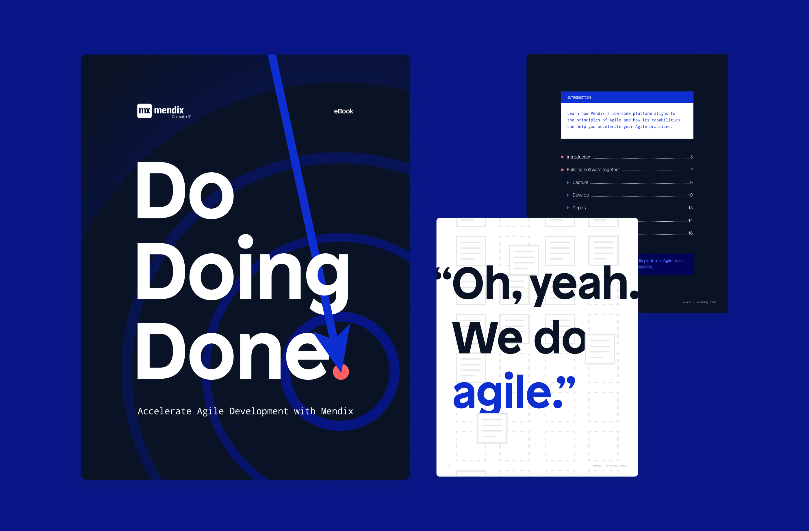
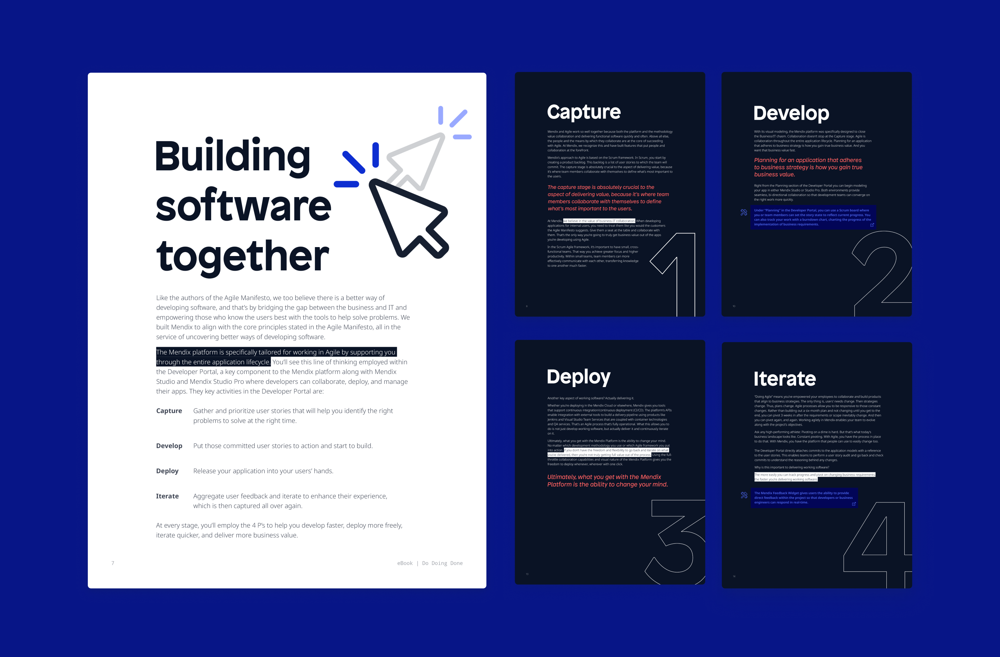
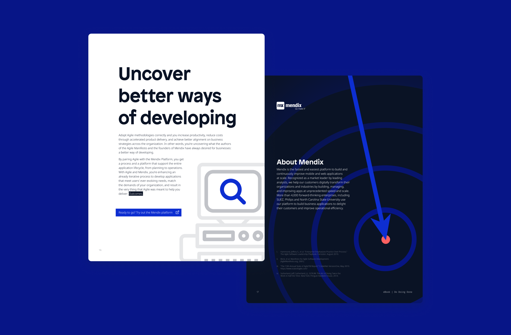

Do Doing Done: Agile eBook
This Mendix eBook explores how the Mendix Platform integrates with and enhances agile methodology. The design features bold typography paired with timeless symbols, reinforcing the theme of productivity and progress.


